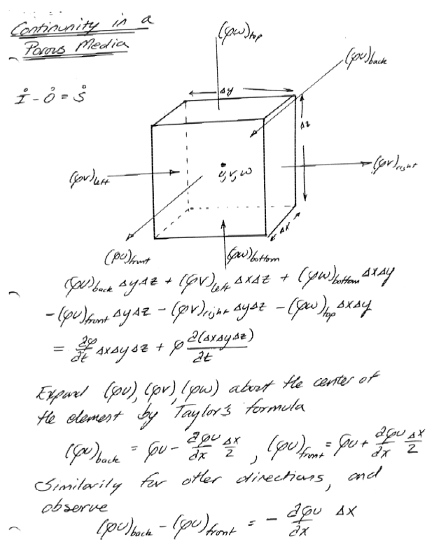

Groundwater Flow Principles (pp. 118 - 127)¶
Discharge¶
Discharge is the volume of flow per unit time in a fluid system. It has dimensions of \(\frac{L^3}{t}\).

The figure is a schematic of a conduit completely filled with fluid. Dye markers are placed at location \(x\) at some time \(t\).
A short period later, the position of the dye markers has moved to the location shown on the diagram. The product of the area of the conduit and the distance swept by the dye markers is a volume. The ratio of this volume and the time it takes for this volume to be defined is called the volumetric flow rate.
In mathematical terms, the area of the conduit is \(A\) . The volume of fluid that passed \(x\) in the time interval \(∆t\) is \(∆xA\). The volumetric flow rate is then
In the limit this flow rate is defined in terms of the mean section velocity
If the velocity varies across the section, as below, the mean section velocity is found by integration.
From calculus we define the differential increment of discharge as
Integration of all the differential elements is expressed as,
From the conceptual definition of average section velocity we can compute its value as the ratio of these two integrals,
Observe that \(Q = \bar u A\) is perpendicular to \(u\) .
For an arbitrary orientation one must compute the scalar product of the velocity vector and the area vector, as depicted below
Specific Discharge¶
Variation of flow velocity of an individual fluid particle is inherent in the nature of flow through porous media. Within an individual pore, boundary resistance causes the velocity to decrease from a maximum along the centerline to essentially zero at the pore wall.
Another form of variation is caused by the tortuous character of the flow - that is, the repeated branching and reconnecting of flow paths as the particles of fluid make their way around the individual grains of solid. This braided pattern causes the velocity of a fluid particle to vary from point to point in both magnitude and direction, even if its motion occurs along the centerline of the pore space. If one considers a small segment of porous material, but large enough to contain many pores, we will observe that these small-scale variations in flow tend to cancel in all except one average direction of flow.

Thus in the figure above a particle of fluid moving from A to B would travel a distance greater than the straight-line distance between the two points. It is generally impossible to know the actual distance, but it should be related to porosity and the pore structure. Pores containing the fluid will occupy only a part of any cross-sectional area of a porous medium. The remainder of the area will be solid.
The traditional definition of average flow velocity from fluid mechanics has to be modified to reflect this fact. The average velocity of flow in pipe flow is defined as the ratio of discharge (volumetric flow rate) and flow area.
In most groundwater studies the ratio of actual area of flow to gross area (the surface porosity) is assumed to be equal to the porosity. Thus the average flow velocity in terms of traditional hydraulics principles is unchanged, but the fluid particle velocity is increased in an amount inversely proportional to the porosity. In groundwater, the ratio of discharge to area (open area as well as solids area) is called the specific discharge or specific flux.
The velocity of individual fluid particles is called the pore velocity or average linear velocity.

In the figure above the ratio of discharge to area is less than the average linear velocity of fluid in the pore space because the gross cross sectional area is greater than the actual cross sectional area of the pore space.
Symbolically we use \(U\) (or \(q\)) for specific discharge, and \(u\) for average linear velocity.
where \(Q\), \(A\), \(n\) are the total discharge, the bulk cross-sectional area, and the porosity, respectively.
Note
The specific discharge does not incorporate effects of dispersion (pg. 130 just after eq. 4.24. The book dicsusses dispersion in some detail in Chapter 10.
Potential Energy and Head¶
The static or piezometric head at a point in a groundwater system is the elevation of the top of a column of water that can be supported above that point (see Figure 4.2 on pg. 121). The density of the water in the measuring column is assumed to be equal to that of the groundwater, and the density of the groundwater is assumed to be uniform.
As such:
Head consists of two terms in a groundwater system: the elevation of the point of interest, and the height of a column of water that can be supported above that point.
The height of the column of water above the point is a measure of the pressure at the point and is called the pressure head, while the elevation of the point of interest is called the elevation head.

The figure above represents an enclosed porous bed; the plane AB is the datum and a piezometer is inserted to the point O. In this figure the head at point O is the distance \(h_p+z\); the sum of elevation and pressure head.
Consider a pipe driven into the ground. The bottom of the pipe comes to rest at a point below the water table where the fluid pressure is \(p\). Water rises in the pipe to a height \(h_p\) above the lower end of the pipe. The pressure at the top of the water column in the pipe is zero (gage). The height of the column of water in the pipe expressed in terms of fluid density, pressure, and the gravitational constant is the piezometric (pressure) head at the bottom of the pipe.
Because the water in the pipe is not in motion, it must obey the laws of fluid statics. The pressure at the bottom of the pipe is related to the height of water in the pipe by Pascal’s law;
In this fashion, \(h_p\) is actually a measure of the pressure in the fluid at the lower end of the pipe. The sum of this pressure head and the elevation head (height of the bottom of the pipe above a datum) is the static head in an aquifer.
The static head is also a measure of the potential energy per unit weight of fluid. This concept is vital, as the difference in static head between two locations is the driving force for flow.

The figure above is a schematic of a piezometer (pipe) sampling a location in a fluid system.
Elevation Head¶
The elevation term \(z\) is the potential energy of a unit weight of water at point \(O\) that exists because point \(O\) is above the datum. This potential is equal to the amount of work required to raise one unit weight of water from the datum to point \(O\). For instance, if \(z\) is 10 meters, and 10 Newtons of water is raised from the datum elevation to point \(O\), then 100 Newton-meters (N-m) of work would be required. Conversely, if 10 Newtons of water were allowed to fall from point \(O\) back to the datum, this weight of water could perform 100 N-m of work.
Pressure Head¶
The pressure term also represents a capacity to do work. Pressure is usually expressed as force per unit area. However pressure can also be expressed as work per unit volume.

One way of illustrating the alternate expression of pressure is to consider a hydraulic cylinder. The figure is a schematic of a hydraulic press. Liquid under pressure \(p\) is fed into the cylinder through the port at \(O\). As the liquid enters, the piston is displaced to the right. Pressure is force per unit area, so the total force on the piston is the product of pressure \(p\) and piston face area \(A\).
The work required to move the piston through the distance \(d\) is the product of force and distance.
The product of piston area \(A\) and distance \(d\) is a volume; thus the ability of the volume of liquid \(Ad\) to perform work \(W\) is given by the fluid pressure \(p\).
Potential energy is the ability to do work. In the hydraulic piston example, the potential energy per unit volume of liquid that is allowed to enter the piston is the pressure. This concept of potential energy can be extended to many kinds of flow systems provided that one understands that the potential is only from forces exerted on a fluid element by the surrounding fluid. To obtain total potential, one needs to add potential energy from the force of gravity, from chemical forces, etc.
In many groundwater problems, only the pressure potential and the gravity potential are important, and the other potentials can be neglected. If the pressure, representing potential energy per unit volume, is divided by the specific weight of the fluid, \(ρg\), then one obtains the term
Which is called the pressure head. It represents the potential (stored as pressure) energy per unit weight of the fluid.
Velocity Head¶
The last important term is kinetic energy, or the energy from motion. In particle mechanics, the kinetic energy is the product of mass and the square of velocity divided by 2.
In a fluid, we represent kinetic energy as the mass per unit volume (V) of fluid moving at the specified velocity (u).
In terms of energy per unit volume of fluid, the kinetic energy potential is
In terms of unit weight (same dimensions as head) the energy per unit weight is
In a groundwater system the flow velocities are usually small and the square of these velocities is even smaller. Thus the kinetic energy terms are usually negligible when compared to the pressure and elevation potentials.
Normally in groundwater problems, one generally neglects the kinetic energy terms and only considers the pressure and elevation potentials, and loss in potential energy from friction.
Note
When the other potentials are functionally important (chemical, osmotic, thermal, etc.); the flow velocities are extremely small!
Darcy’s Law (pp. 128 - 130)¶
Darcy’s law is the equation of motion use3d to relate driving forces (energy potentials) to head losses.
There are 3-D extensions which we deal with later on.
There are limitations to appliciability of Darcy’s law:
Flow must be laminar \(Re = \frac{\rho u d}{\mu} <= 10\) where \(d\) is the grain diameter usually \(d_{10}\) or \(d_{50}\)
Can have high \(u\) near a pumping well so the \(Re\) is too high and Darcy’s law is invalid
Fractured media and karst have high \(Re\) in the fractures and Darcy’s law is invalid
In dense clays and zeolites thermal or chemical gradients can move water - and Darcy’s law is essentially invalid
Continunity in a Porous Media¶
Roughly pp. 130-134, but using different letters of the alphabet - end result is the same!
Note
My hand written notes use \(\omega\) as porosity and \(w\) for the z-component of velocity, but they look the same
